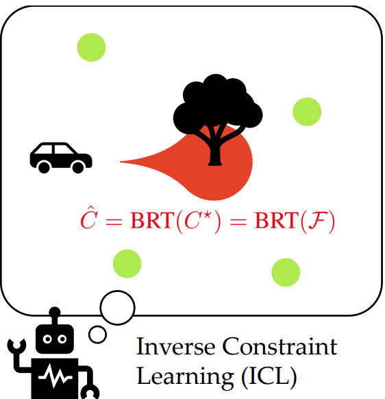
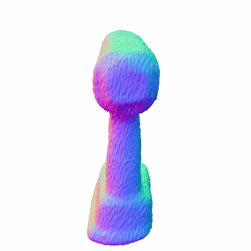
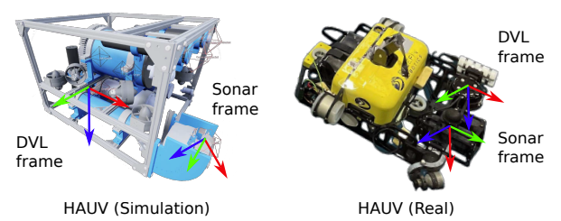
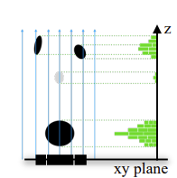
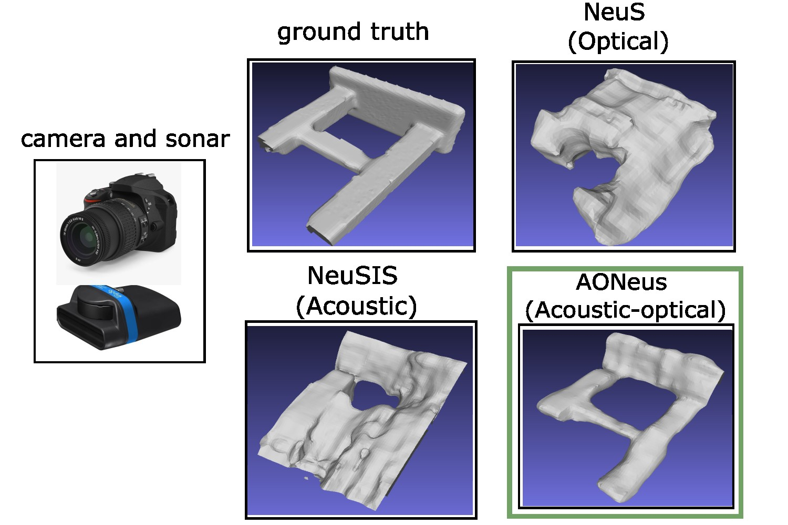
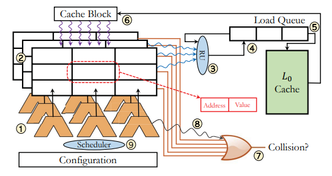

I recently completed my PhD at the Robotics Institute at Carnegie Mellon University, where I worked with
Michael Kaess in the Robotics Perception Lab.
My research interests span robotics, computer vision, and machine learning, with a focus on developing new methods for perception, statistical inference, and decision-making in challenging real-world environments.
I completed my Masters in Robotics at CMU working with George Kantor
on SLAM in agricultural environments. Previously, I worked with Simon Lucey and
Laszlo Jeni on monocular 3D reconstruction. In my undergrad, I majored in Electrical Engineering at the University of Maryland - College Park.
Overcoming Valid Action Suppression in Unmasked Policy Gradient Algorithms
Renos Zabounidis, Roy Siegelmann, Mohamad Qadri, Woojun Kim, Simon Stepputtis, Katia P. Sycara RLJ, 2026 paper
We show that unmasked policy gradient methods can suppress rarely valid but task-critical actions, and propose feasibility classification to enable robust deployment without oracle action masks.

Your Learned Constraint is Secretly a Backward Reachable Tube Mohamad Qadri, Gokul Swamy, Jonathan Francis, Michael Kaess, Andrea Bajcsy RLJ, 2025 paper /
code
We prove that learned constraints, using Inverse Constraint Learning (ICL) algorithms, correspond to a dynamics-dependent Backward Reachable Tube (BRT) rather than a failure set.
InCOpt: Incremental Constrained Optimization Using the Bayes Tree Mohamad Qadri, Paloma Sodhi, Joshua Mangelson, Frank Dellaert, Michael Kaess IROS, 2022 paper /
video /
code We present an Augmented Lagrangian-based
incremental constrained optimizer that views matrix operations
as message passing over the Bayes tree.
3D Reconstruction

TouchAnything: Diffusion-Guided 3D Reconstruction from Sparse Robot Touches
Langzhe Gu, Joe Huang*, Mohamad Qadri*, Michael Kaess, Wenzhen Yuan ECCV, 2026 paper /
website
In this work, we show that large-scale pretrained 2D vision diffusion models can serve as such priors for tactile-based 3D reconstruction. TouchAnything combines local tactile consistency with global diffusion-based geometric guidance to reconstruct object geometry from sparse robot touches.

Acoustic Neural 3D Reconstruction Under Pose Drift
Tianxiang Lin*, Mohamad Qadri*, Kevin Zhang, Adithya Pediredla, Christopher A. Metzler, Michael Kaess IROS, 2025 arXiv We tackle the challenge of accurate acoustic 3D reconstruction under drifting and noisy sensor pose by jointly optimizing the neural scene representation and sensor (sonar) poses.
Our method enables high-fidelity reconstructions even under significant pose drift.

Z-Splat: Z-Axis Gaussian Splatting for Camera-Sonar Fusion
Ziyuan Qu, Omkar Vengurlekar, Mohamad Qadri, Kevin Zhang, Michael Kaess, Christopher Metzler, Suren Jayasuriya, Adithya Pediredla TPAMI, 2024 arXiv We extend Gaussian splatting to sonar cameras and propose fusion with RGB data for robust 3D reconstruction.

AONeuS: A Neural Rendering Framework for Acoustic-Optical Sensor Fusion Mohamad Qadri*, Kevin Zhang*, Akshay Hinduja, Michael Kaess, Adithya Pediredla, Christopher Metzler SIGGRAPH, 2024 arXiv We fuse acoustic and optical measurements for high-resolution 3D surface reconstruction, even under limited baselines.
Runahead A*: Speculative Parallelism for A* with Slow Expansions
Mohammad Bakhshalipour, Mohamad Qadri, Seyed Borna Ehsani, Dominic Guri, Maxim Likhachev, Phillip B. Gibbons ICAPS, 2023 We introduce Runahead A*, a form of speculative parallelism for speeding up A* search in planning tasks.

RACOD: Algorithm/Hardware Co-Design for Mobile Robot Path Planning
Mohammad Bakhshalipour, Seyed Borna Ehsani, Mohamad Qadri, Dominic Guri, Maxim Likhachev, Phillip B. Gibbons ISCA, 2022 paper Joint algorithm/hardware co-design for path planning, with CODAcc hardware and the RASExp algorithm for parallel exploration.